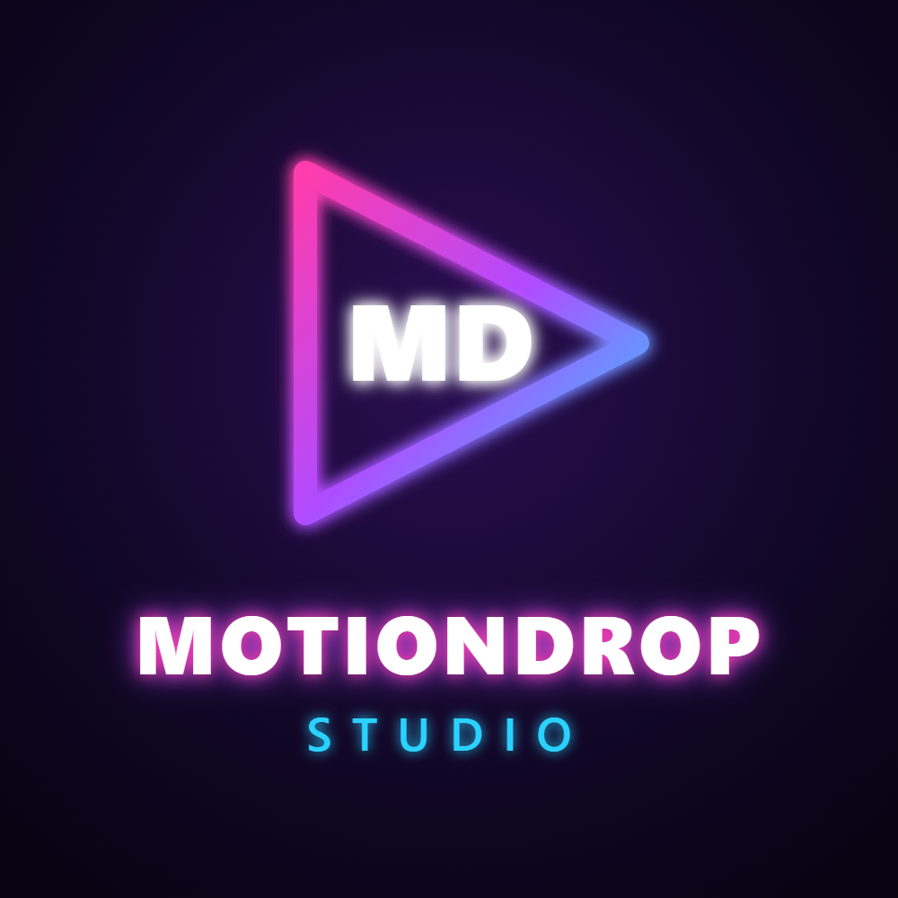
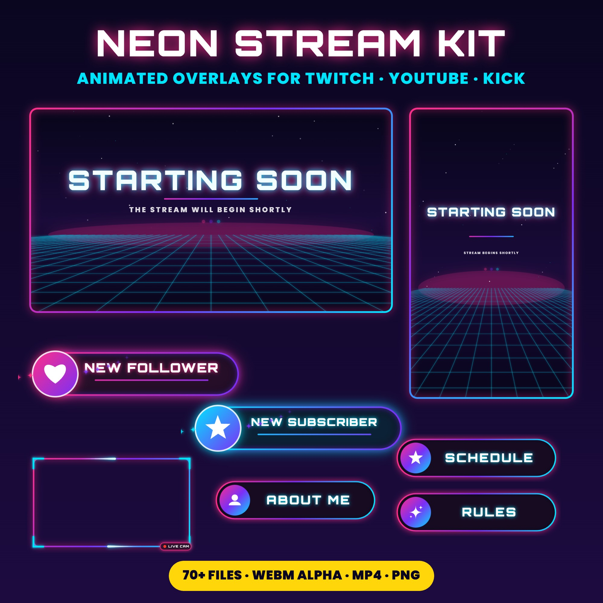
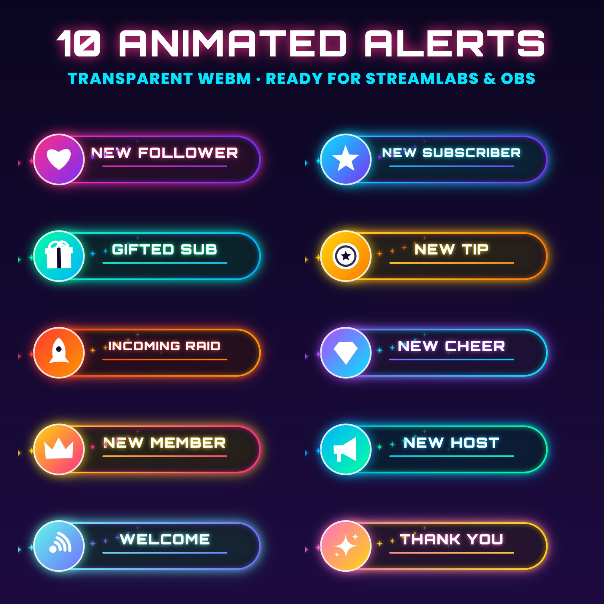
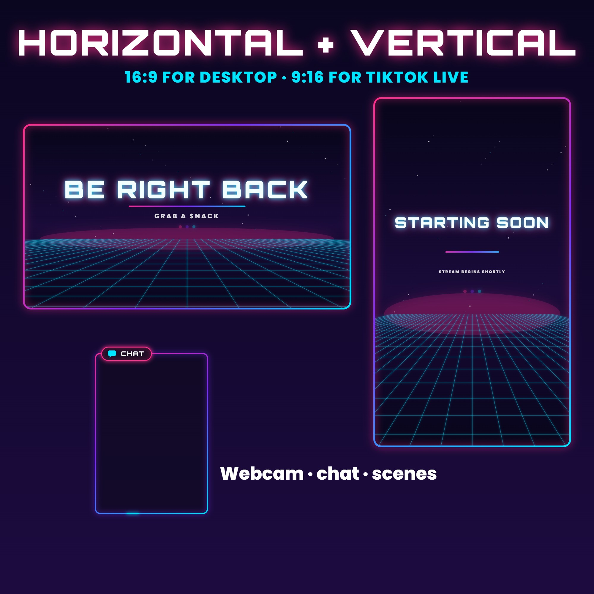

MotionDrop StudioMotionDrop Studio is an independent motion design studio founded in France in 2026. We produce short animated ads, UI and product animations, and ready-to-use streaming assets, generated from reusable code templates and refined with AI assistance and human review.
contact@motiondropstudio.dpdns.org10 to 30 second vertical and square ads for apps, products and SaaS, delivered as MP4, GIF or Lottie.
Animated alerts, scenes, overlays and transitions for Twitch, YouTube and TikTok Live, with transparent WebM and green-screen versions.
Lightweight call-to-action stickers, UI micro-animations and icon loops for websites and social media.



Our first products are available on our Etsy shop. Custom projects are offered on Upwork and Contra.
Next: a self-serve tool that lets small businesses generate on-brand motion ads from a short brief, built on the Claude API.